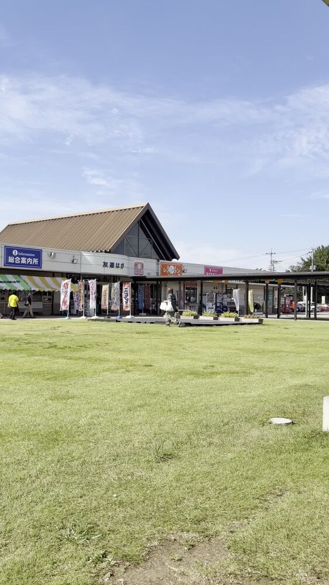
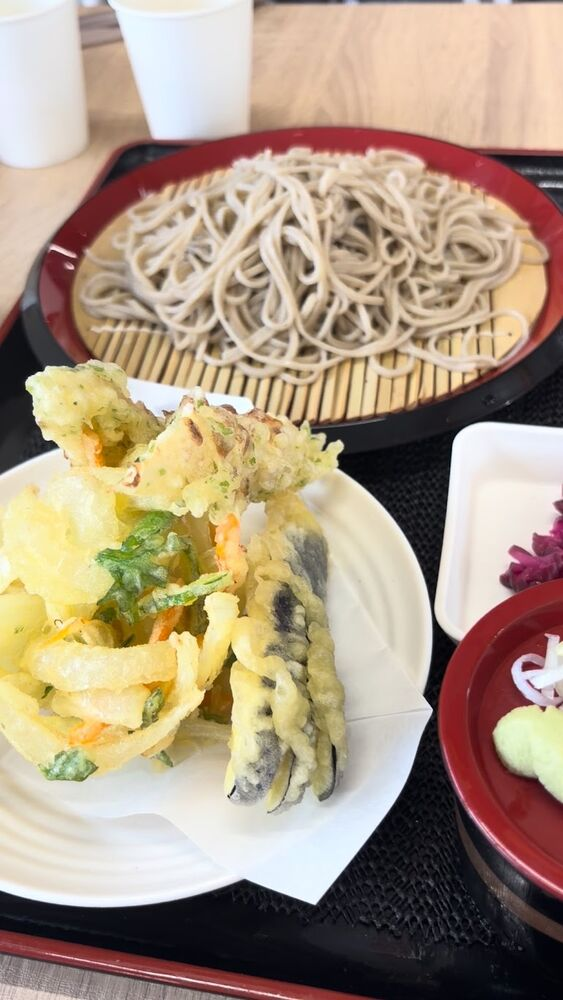

I live in rural Ibaraki, and I love going to Tochigi next door. It is only about an hour away, but the food is different: gyoza, strawberries, dango, wine. If you come to Ibaraki, please add Tochigi too. Here are my favorites, and a simple 2-day route.
Gyoza in Utsunomiya: go to Minmin
Utsunomiya is Japan's famous gyoza city. If you ask me where to go, I say Minmin (宇都宮みんみん), a gyoza shop since 1958. The menu is just three kinds: pan-fried (yaki), boiled (sui) and deep-fried (age) gyoza. You mix your own sauce at the table with soy sauce, vinegar and chili oil. Simple and so good. Lines are normal — it moves fast.

Strawberries: Tochigi is the strawberry kingdom
Tochigi has grown the most strawberries in Japan for more than 50 years. Try local varieties like Tochiaika (it looks like a heart when you cut it), Skyberry (big!) and the white Milky Berry. Strawberry picking season is about December to May. Book ahead on weekends.
Michi-no-eki: Japan's roadside stations
A michi-no-eki (道の駅) is a roadside station: a rest stop with local vegetables, snacks, toilets and a small restaurant. There are many in Tochigi, and they are the best way to see what local people really eat. Please stop at as many as you can!

My favorite is Michi-no-eki Sashiba no Sato Ichikai (道の駅サシバの里いちかい) in Ichikai. I love the soba at the little soba shop there, そば処 手繰庵: cold soba with crispy vegetable tempura. The name of the station comes from the sashiba, a small hawk that comes to this area. Buy fresh vegetables and strawberries in season too.

Oya History Museum: an underground stone world
In Utsunomiya, the Oya History Museum (大谷資料館) is an old stone quarry under the ground. People dug Oya stone here from 1919 for about 70 years, and left a huge space about 30 m underground. It looks like an ancient temple. It is cold inside all year (around 8°C), so bring a jacket, even in summer.
Nikko
Nikko is so good: shrines in the cedar forest, mountains and lakes. And near Nikko there is a restaurant I really love: Shino (とんかつ ステーキ 篠), a tonkatsu and steak house. It is so good, and so popular — there is a long line at lunch, even on weekdays. Their pork sauté and garlic steak are famous. Go early, or try dinner.
Nasu: cool summers and camping
In summer, Japan gets very hot and humid. So many Japanese people travel to cooler places just to escape the heat. This is called hisho (避暑) — “escaping the summer heat.” Nasu (那須), in the highlands of north Tochigi, is a classic one. The air is cool, and it is so good for camping.
Sano ramen
Sano (佐野) is famous for Sano ramen: a clear soy sauce soup and flat, soft noodles. There are so many ramen shops in the city. Easy to add on the way home, near the Sano outlet mall.
More Tochigi favorites
- Buheisaku (武平作), Tochigi City: fresh dango made every day.
- Kanuma Satoyama Wine: wine from their own grapes, even strawberry wine. I love it. (I wrote about their harvest festival.)
- Kuroda Yohoen honey and Ichouan udon in Kanuma.
- The pink Ginger Museum in Tochigi City (free!).
My 2-day Ibaraki + Tochigi route (by car)
Day 1 — Ibaraki to Utsunomiya
- Morning: Mito or Kasama in Ibaraki (Kasama Inari Shrine and pottery).
- Lunch: soba at Michi-no-eki Ichikai.
- Afternoon: Oya History Museum (bring a jacket).
- Dinner: gyoza at Minmin in Utsunomiya. Stay in Utsunomiya.
Day 2 — Kanuma and Tochigi City
- 9:00: taste honey at Kuroda Yohoen.
- 11:00: early lunch, udon at Ichouan.
- Kanuma Satoyama Wine (buy a bottle; don't drink if you drive!).
- Afternoon: Ginger Museum and dango at Buheisaku in Tochigi City.
- Drive home on the Kitakanto Expressway.
Got a 3rd day? Go to Nikko. Coming in summer? Go up to Nasu for cool air and camping. Strawberry season (about Dec–May)? Add strawberry picking on Day 2. Going home via Sano? Stop for Sano ramen.
Tip: many shops close on Tuesdays (and Satoyama Wine on Wednesdays). Check before you go. A car makes this trip much easier.
One hour from home, and a different taste of Japan.
Want a plan just for you? Ask Kaho. If you go, post with #KahoIbaraki!